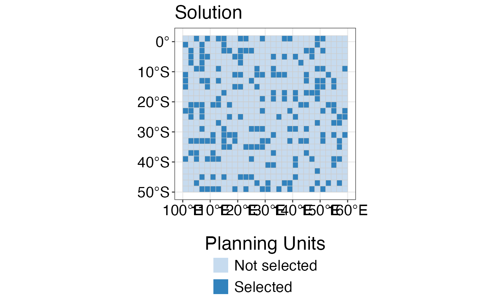

This function allows to customise plots in a simple and reproducible way, by giving the option for several inputs that can be included in maps produced with the other functions of this package.It can be combined with the spatialplanr spatial plotting functions (e.g. splnr_plot_MPAs(), splnr_plot_PUs(), splnr_plot_solution(), splnr_plot_binFeature()).
Usage
splnr_gg_add(
PUs = NA,
colorPUs = "grey80",
Bndry = NA,
colorBndry = "black",
land = NA,
colorLand = "grey20",
contours = NA,
cropLand = NA,
colorsConts = "black",
lockedInAreas = NA,
Type = "Full",
colInterest = NA,
alphaLI = 0.5,
colorLI = "black",
legendL = "",
labelL = "MPAs",
ggtheme = "Default"
)Arguments
- PUs
Planning Units as an
sfobject- colorPUs
A color value for the outline of planning units.
- Bndry
The planning region boundaries as an
sfobject- colorBndry
A color value for the outline of the boundary.
- land
An
sfobject of land polygon.- colorLand
A color value for landmass.
- contours
An
sfobject of contours that are important to visualise (e.g. outline of sea mounts, ridges; can be produced with terra::as.contour()); up to 6 different contours possible.- cropLand
An
sfobject with the boundary box used for cropping the land object.- colorsConts
A color value for contours.
- lockedInAreas
An
sfobject with binary data of locked in areas in the prioritisation (e.g. MPAs).- Type
Either "Full" or "Contours"; "Full" maps the locked in areas on top of the planning units; "Contours" draws the outline of the locked in areas.
- colInterest
column of data frame that contains binary information of the locked in areas to plot
- alphaLI
A value (0-1) for the opacity of the locked in areas when plotted on top of other plots.
- colorLI
A color value for the locked in areas.
- legendL
A character value for the title of the legend of the locked in areas. Can be empty ("").
- labelL
The legend label of the locked in area (e.g. MPAs)
- ggtheme
The theme applied to the plot. Can either be NA (default ggplot), "Default" (default spatialplanr: theme_bw() and some basic theme settings) or a user-defined list of theme properties.
Examples
dat_problem <- prioritizr::problem(dat_species_bin %>% dplyr::mutate(Cost = runif(n = dim(.)[[1]])),
features = c("Spp1", "Spp2", "Spp3", "Spp4", "Spp5"),
cost_column = "Cost"
) %>%
prioritizr::add_min_set_objective() %>%
prioritizr::add_relative_targets(0.3) %>%
prioritizr::add_binary_decisions() %>%
prioritizr::add_default_solver(verbose = FALSE)
dat_soln <- dat_problem %>%
prioritizr::solve.ConservationProblem()
splnr_plot_solution(dat_soln) +
splnr_gg_add(PUs = dat_PUs, ggtheme = "Default")
#> Coordinate system already present. Adding new coordinate system, which will
#> replace the existing one.
#> Warning: Duplicated `override.aes` is ignored.
